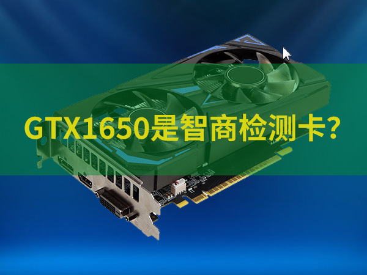
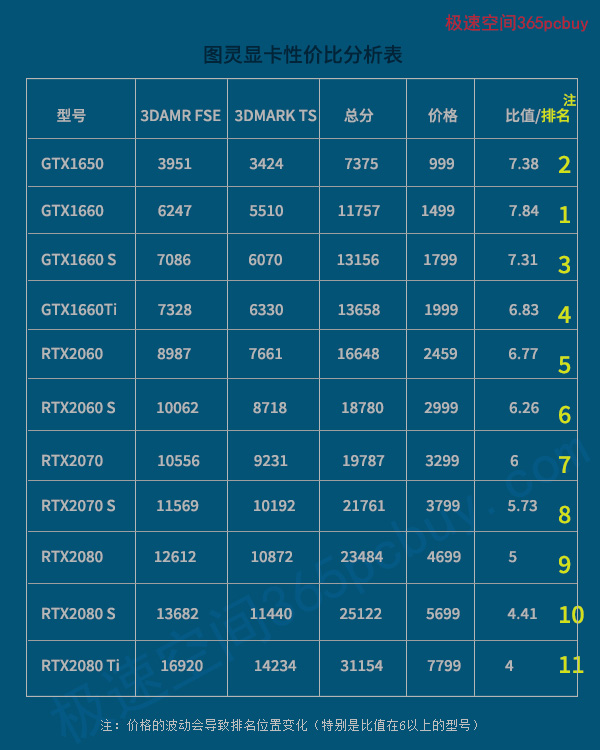
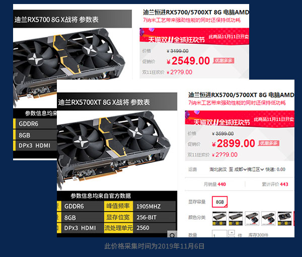

文章标题
发表时间：2019-11-10 文章浏览次数：2165 作者：pc大湿
双11快来了，N卡哪款性价比高？RX5700/XT非公版什么价格购买划算？阅读此文会有答案。
很多时候，用户的需求是模糊的，他并不玩特大型3D游戏，论性能，GTX1650已经可以满足需求，看预算，RTX2060也不在话下，他的诉求是“想买个性价比最高的”，实际上这也是人们的一种原始欲望，总想买到“最划算”的商品。
智商检测卡
有用户想买GTX1650，但一听别人说这是“智商检测卡”，犹豫了。
如果问为什么，语出讥讽者的理由通常有两条：
1、比同价位的对手性能低（现在的可比卡为：RX580 2048P）
这是只考虑了购买价格，没有考虑到RX580的五个不可见成本。其一、RX580功耗更大，需要搭配的电源成本更高。2、耗电量更大，RX580 2048SP游戏功耗比GTX1650高大约100W，每天只算2小时，一年多用40~50元电费。3、贬值率更快。RX580 8G刚出来时候是价格高于GTX1066，现在却低于对手。4、有些一线品牌只有两年质保，GTX1650全部均为三年。5、老型号显卡，有买到二手、返修、翻新的风险。
买一辆车，价格一样只比速度，这显然是不合适的，就算不考虑发动机的先进程度，最少也要考虑下油耗的高低。
2、不能满足当下的游戏需求。
这显然不成立。不同用户对3D性能要求也不同，不能要求所有用户都要2K画质玩《刺客信条奥德赛》《巫师3》，很多人还是1080P分辨率+60Hz显示器，即使玩《绝地求生》这类要求较高的游戏，开最高画质也有60多帧。

显卡里有没有智商检测卡呢？答案是：没有。因为不同的显卡适合不同需求，即使是“比惨大会的冠军GT1030 D4”也能找到主人，只是这类用户的范围很狭窄，比较少。
公平的方法是在“同一个架构下对比”。
Nvidia显卡性价比排名
显卡选择的核心是“根据预算和需求去挑选最适合的型号”，假设脱离这个核心，单纯以“性能价格比”做个排名，谁又能问鼎性价比冠军呢？
在排名前，需要定一个标尺，以3DMARK fire strike extreme（FSE） 和 3DMARK Time Spy（TS）分数之和来作为性能标尺，站长将其命名为【FSE+TS对比法】，这个方法的优点一个是比较简单，第二能比较接近实际表现，这在《基因突变，RX 5700大战RTX2060 SUPER》文章中有介绍。

此表格中的性能值来至于mydrivers等网站评测，价格以2019年11月5日，影驰、七彩虹天猫专卖店的入门型号价格（非双11活动价）
排名解读
1、这个名次不会精确，也不可能精确。同一型号的显卡，GPU频率和显存频率会有不同，版本价格会有差异。
但是，可以清晰地看出规律——越高档的显卡，性价比越低。
2、事实说明GTX1650非但不是智商检测卡，而且是高性价比型号，它在上个月还以899元的价格荣登过显卡性价比冠军，是主流显卡中，性价比值唯一超过8的型号。很遗憾，现在899已经买不到了。
显卡的性价比区间多在【中档~中高档】这个范围，越是往两极（高、低），性价比就越低。
往低，GT1030还没有接班人，GT1630的人影子都还看不到。
往高，RTX2070以上型号的比值就低于6了，RTX2080Ti只有4，还有更低的，quadro专业卡......
3、新型号GTX1660 SUPER性价比略超过GTX1660Ti，有点小惊喜，但不敌GTX1660，从历史趋势看，它和GTX1660的价格区间后期会缩小，成为夺冠热门。
4、考虑光追的加成，RTX2060应排在GTX1660Ti前面。
后期有实力冲击比值8的高性价比四大金刚为——
GTX1650、GTX1650 SUPER（暂未上市）、GTX1660和GTX1660 SUPER
AMD显卡排名
A卡（RX 5700系列）这边的情况没有预期的好，不是都说A卡性价比高么？有点遗憾，非公版的价格并不理想。

RX 5700的FSE+TS总分大约为：18687，价格2549元，比值：7.33
RX 5700XT的FSE+TS总分大约为：21276，价格2899元，比值：7.34
由此可见，迪兰官方的定价如同激光制导般精准，两个比值极其接近，完美诠释了“一分价格一分货”的真谛。
这能说明什么？A卡的非公价格偏高了，对标RTX2060，它没有光追，对比GTX1660S，比值都在7.3左右，RDNA架构虽然厉害，但毕竟是第一代产品，无论是驱动、对游戏的优化，还是残值率，和图灵相比都还差一截。只有非公版价格降到让其比值达到8以上，才有吸引力。这是一个简单除法，18687/8=2336元，RX 5700非公要低于此价格才比较划算（前提是：对标的N卡没有降价）
性价比值高于8的型号
从图一看出，性价比值没有高于8的，那么，跳出图灵和RDNA的圈子，能找到么？当然能！二手卡肯定比值高，高功耗的RX580/590等比值都高，要拥抱她高挑的身材，就必须要做好忍受她发脾气的准备。
双11快来了，各商家都给出了最大的优惠，您也可以用站长的方法，算一下自己买的显卡，性价比值是多少，超过6及格，超过7优秀，超过8眼光非凡，超过9，您可谓神机妙算，超过10？图灵和RDNA的非公版今年几乎不可能，厂家没这么仁慈。